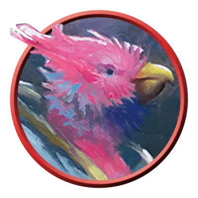

Ааракокра аэромант
Aarakocra Aeromancer
Средний Элементаль, Нейтральный

Класс Защиты 16 Инициатива +3 (13)
Хиты 66 (12к8 + 12)
Скорость 20 футов, Полёта 50 футов
| мод | спас | ||
|---|---|---|---|
| СИЛ | 10 | +0 | +0 |
| ЛОВ | 16 | +3 | +5 |
| ТЕЛ | 12 | +1 | +1 |
| мод | спас | ||
|---|---|---|---|
| ИНТ | 13 | +1 | +1 |
| МДР | 17 | +3 | +5 |
| ХАР | 12 | +1 | +1 |
Чувства пассивное Восприятие 17
Языки Первичный (Ауран), Язык Ааракокра
Опасность 4 (1 100 опыта; БВ +2)
Действия
Мультиатака. Ааракокра совершает две атаки Посохом ветра и может сотворить заклинание Порыв ветра.
Посох ветра. Бросок рукопашной или дальнобойной атаки: +5, досягаемость 5 фт. или дистанция 120 фт. Попадание: 7 (1к8 + 3) Дробящего урона плюс 11 (2к10) урона Электричеством.
Сотворение заклинаний. Ааракокра сотворяет одно из следующих заклинаний, не нуждаясь в Материальных компонентах (заклинательная характеристика — Мудрость, Сл спасброска заклинаний 13):
Неограниченно: Волшебная рука, Порыв ветра, Сообщение, Элементализм
1/день: Молния
Реакции
Плавное падение (1/день). Ааракокра сотворяет Падение пёрышком при наступлении условия заклинания и использует заклинательную характеристику из действия Заклинания.
Бонус мастерства +2
Среда обитания Горы, Стихийный план Воздуха
Сокровища Личные, Инструментальные
Ааракокра
Крылатые защитники неба
Ааракокра — похожий на птиц народ, который парит в небесах бесчисленных миров и бескрайних просторах Стихийного плана Воздуха. Внешне они обычно схожи с теми птицами, что распространены в тех краях, где обитают: некоторые напоминают ястребов или кондоров, другие же похожи на колибри или археоптериксов. Во многих землях ааракокра рассказывают о славных древних временах, когда они сражались с проклятой Королевой Хаоса бок о бок с таинственными Воздушными герцогами Ааки. **
**
Ааракокры- аэроманты повелевают волшебными ветрами бесконечных штормов Стихийного плана Воздуха.